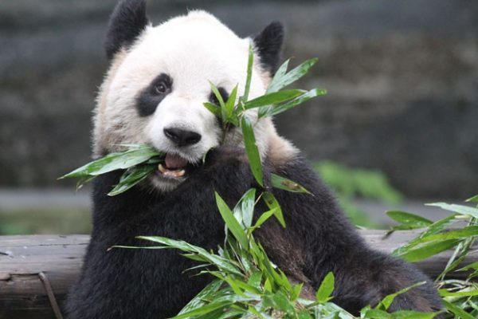

O panda-gigante (nome científico: Ailuropoda melanoleuca, do grego: ailuros, gato + poda, pés; e melano, preto + leukos, branco) é um mamífero omnívoro da família Ursidae endêmico da República Popular da China. O focinho curto lembrando um urso de pelúcia, a pelagem preta e branca característica e o jeito pacífico e bonachão o tornam um dos animais mais queridos pela humanidade. Extremamente dócil e tímido, dificilmente ataca o homem, a não ser quando extremamente irritado.

O panda-gigante foi descrito pelo missionário francês Armand David em 1869 como Ursus melanoleucus.
No ano seguinte, Alphonse Milne-Edwards ao examinar o material enviado por David, notou que os caracteres
osteológicos e dentários o distinguia dos ursos e o aproximava ao panda-vermelho e aos procionídeos,
descrevendo então um novo gênero para a espécie, e recombinando-a para Ailuropoda melanoleuca.[4]
No mesmo ano, Paul Gervais concluiu com base num estudo das estruturas intracranianas que o panda era relacionado com
os ursos, criando um novo gênero, o Pandarctos.[5]
Em 1871, Milne-Edwards acreditando que o gênero Ailuropoda estava pré-ocupado pelo Aeluropoda de Gray,
publicado em 1869, propõe o nome Ailuropus. William Henry
Flower e Richard Lydekker em 1891 emendam o novo nome de Milne-Edwards para Aeluropus,[6] resultando em uma
considerável confusão na literatura subsequente.[7] A classificação do panda-gigante tem sido objeto de
grande controvérsia por muitos
anos, principalmente pelas características compartilhadas com o panda-vermelho, como semelhanças nas
estruturas craniais, dentárias, viscerais e da genitália externa, assim como a presença do osso sesamoide
opositor na mão (falso-dedo).[8]
Inicialmente tratado como urso, e posteriormente relacionado com o panda-vermelho e os procionídeos, a
espécie sofreu reposicionamento taxonômico diversas vezes no decorrer dos anos.
Em 1885, George Jackson Mivart revisou os carnívoros artóideos
posicionado tanto o Ailurus como o Ailuropoda na família Procyonidae.[9] Flower e Lydekker 1891, dividiram
os gêneros, deixando o Ailurus na Procyonidae e movendo o Ailuropoda para a Ursidae.[6] Em 1895, Herluf
Winge relacionou o panda a um
gênero extinto, o Agriotherium.[10] Em 1901, Ray Lankester e Richard Lydekker reafirmam o posicionamendo de
ambos os gêneros entre os procionídeos, separando-os na subfamília Ailurinae.[11][12] Reginald Innes Pocock
em 1921 revisou a Procyonidae,
separando os dois gêneros em famílias distintas, Ailuridae e Ailuropodidae.[13]
William Gregory, em 1936, ao examinar características craniais e dentárias dos dois pandas e de outros gêneros extintos, retorna os dois
gêneros a família Procyonidae.[14]
George Gaylord Simpson em sua classificação dos mamíferos de 1945 mantém o posicionamento defendido por
Mivart e demais autores que colocam os dois gêneros de pandas entre os procionídeos.[15]